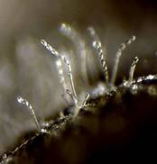

TOBACCO :: MAJOR DISEASE :: POWDERY MILDEW
Powdery mildew - Erysiphe cichoracearum var. nicotianae
Symptoms
Initially the disease appears as small, white isolated patches on the upper surface of the leaves. Later, it spreads fast and covers the entire lamina. The disease initially appears on the lower leaves and as disease advances, the rest of the leaves are also infected and sometimes powdery growth can be seen on the stem also. The affected leaves turn to brown and wither and show scorched appearance. The severe infection leads to defoliation and reduction in quantity and quality of the curable leaves.
Pathogen
The fungus is ecotophytic and produces hyaline, septate and highly branched mycelium. Short, stout and hyaline conidiophores arise from the mycelium and bear conidia in chains. The conidia are barrel shaped or cylindrical, hyaline and thin walled. Cleistothecia are black, spherical with no ostiole, with numerous densely-woven septate, brown-coloured appendages. They contain 10-15 asci which are ovate with a short stalk. Each ascus contains two ascospores which are oval to elliptical, thinwalled, hyaline and single celled.
|  |
Conidia and conidiophores |
Favourable Conditions
- Humid cloudy weather.
- Low temperature (16-23˚C.
- Close planting and excess doses of nitrogenous fertilizers.
Disease cycle
The fungus remains dormant as mycelium and cleistothecia in the infected plant debris in soil. The primary infection is mainly from soil-borne inoculum. The secondary spread is aided by wind blown conidia.
Management
- Apply balanced ferilizers.
- Avoid overcrowding of plants.
- Remove and destroy the affected leaves.
- Plant early in the season so that crop escapes the cool temperature at maturity phase.
- Spray dinocap at 375 ml or Carbendazim at 500g/ha.